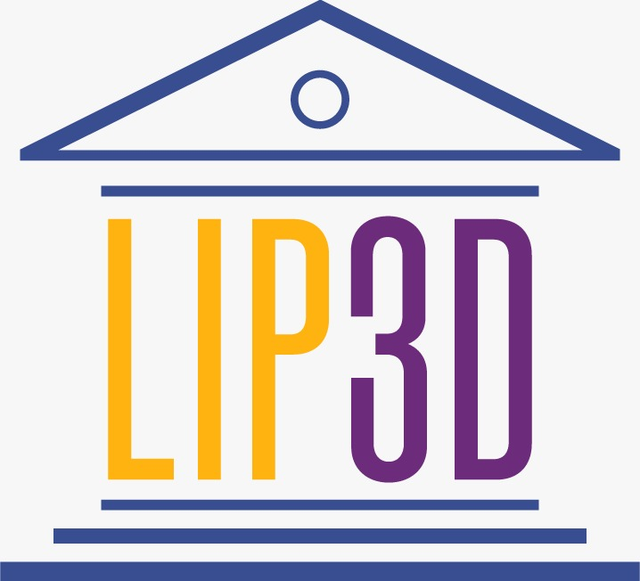

Supported by LIP3D
Join leading experts, researchers, creatives and institutions in exploring the future of digital cultural heritage through immersive technologies – XR, AR, VR and gamification. Discover how innovation bridges the physical and digital past.
Timișoara is defined by the exceptional density and diversity of its built heritage, holding the largest ensemble of buildings classified as historical monuments in Romania. Within this historically rich environment, Politehnica University Timisoara (UPT), one of the Romanian schools with tradition, is a university of advanced research and education that has gained its national and international recognition through the ongoing activity of generations of teachers and the exceptional activity of prestigious academics.
Join experts and researcher at Timișoara, the European Capital of Culture recognized for having the largest ensemble of historical monument buildings in Romania, for a pioneering event in the field of heritage preservation and valorization. The *"Immersive Heritage" Conference* is the platform where 3D innovation, Virtual Reality (VR), and Augmented Reality (AR) meet history, offering revolutionary solutions for interacting with the past. We explore how immersive technologies can transform historical sites into educational and cutting-edge research environments, contributing directly to the academic prestige and international recognition of local institutions, such as Politehnica University Timișoara. Do not miss the opportunity to be part of redefining how cultural heritage is understood, protected, and transmitted to future generations.
Director, Centre for Lifelong Learning — Politehnica University Timisoara
Assoc.prof. Beatrice Vilceanu is the Director of Centre for Lifelong Learning from Politehnica University Timisoara and conducts research on aspects such as LiDAR applications in the Geodetic Engineering domain and Reverse engineering with a view to creating 3D point clouds/mesh models for H-BIM in the cultural heritage domain. The scientific research was materialized in numerous grants and projects developed with private companies in the geodetic sector and departments from EU universities.
Keynote, XR Workshops, Exhibition Launch, Panel on Digital Heritage
Keynote, Demos, Interactive Sessions, Museums of the Future
Paper Sessions, Roundtables, Awards & Closing Ceremony
Get the full programme and event highlights in a printable format.
Use the official template for presentations and posters.
Secure your place at Immersive Heritage 2026 and connect with innovators in digital culture.
The Papers from the conference can also be indexed in IEEE special session
"Enhancing Cultural Narrative and Accessibility through VR/AR".
https://eeite.hmu.gr/special-sessions/